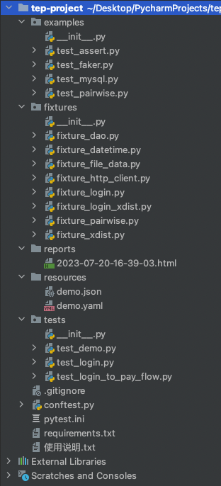
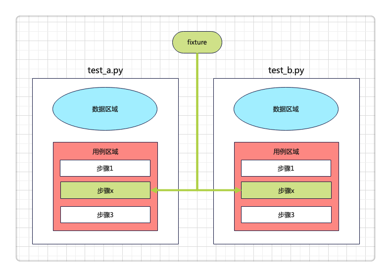

pytestx重新定义接口框架设计¶

概览¶
脚手架：
目录：

用例代码：
"""
测试登录到下单流程，需要先启动后端服务
"""
test_data = {
"查询SKU": {
"skuName": "电子书"
},
"添加购物车": {
"skuId": 123,
"skuNum": 2
},
"下单": {
"orderId": 222,
"payAmount": "0.2"
},
"支付": {
"skuId": 123,
"price": 0.1,
"skuNum": 2,
"totalPrice": 0.2
},
}
case_vars = dict()
def test(http, login_headers, file_data):
# 搜索商品
url = file_data["domain"] + "/api/tasks/mock/searchSku"
body = test_data["查询SKU"]
response = http("get", url=url, headers=login_headers, params=body)
assert response.status_code < 400
case_vars["skuId"] = response.jsonpath("$.skuId")
case_vars["skuPrice"] = response.jsonpath("$.price")
# 添加购物车
url = file_data["domain"] + "/api/tasks/mock/addCart"
body = test_data["添加购物车"]
body["skuId"] = case_vars["skuId"]
response = http("post", url=url, headers=login_headers, json=body)
assert response.status_code < 400
case_vars["skuNum"] = response.jsonpath("$.skuNum")
case_vars["totalPrice"] = response.jsonpath("$.totalPrice")
# 下单
url = file_data["domain"] + "/api/tasks/mock/order"
body = test_data["下单"]
body["skuId"] = case_vars["skuId"]
body["price"] = case_vars["skuPrice"]
body["skuNum"] = case_vars["skuNum"]
body["totalPrice"] = case_vars["totalPrice"]
response = http("post", url=url, headers=login_headers, json=body)
assert response.status_code < 400
case_vars["orderId"] = response.jsonpath("$.orderId")
# 支付
url = file_data["domain"] + "/api/tasks/mock/pay"
body = test_data["支付"]
body["orderId"] = case_vars["orderId"]
response = http("post", url=url, headers=login_headers, json=body)
assert response.status_code < 400
assert response.jsonpath("$.success") == "true"
页面下载脚手架¶
启动平台前后端服务后，从页面下载脚手架，平台会拉取开源项目tep-project最新代码，打成压缩包，生成下载文件，弹窗下载。
备注：tep startproject demo使用的已封版的1.0.0版本，新框架请访问开源项目tep-project，或者开源平台pytestx
精简目录¶
目录直观上非常精简，得益于去掉了环境变量、函数等目录，聚焦三大目录：
fixtures
resources
tests
重度使用fixture¶
fixture原本只能在conftest定义，借助pytest插件扩展识别fixtures目录：
#!/usr/bin/python
## encoding=utf-8
"""
@Author : dongfanger
@Date : 8/14/2020 9:16 AM
@Desc : 插件
"""
import os
BASE_DIR = os.path.dirname(os.path.abspath(__file__))
RESOURCE_PATH = os.path.join(BASE_DIR, "resources")
def fixture_paths():
"""
fixture路径，1、项目下的fixtures；2、tep下的fixture；
:return:
"""
_fixtures_dir = os.path.join(BASE_DIR, "fixtures")
paths = []
# 项目下的fixtures
for root, _, files in os.walk(_fixtures_dir):
for file in files:
if file.startswith("fixture_") and file.endswith(".py"):
full_path = os.path.join(root, file)
import_path = full_path.replace(_fixtures_dir, "").replace("\\", ".")
import_path = import_path.replace("/", ".").replace(".py", "")
paths.append("fixtures" + import_path)
return paths
pytest_plugins = fixture_paths() # +[其他插件]
conftest.py的fixture全部转移至fixtures目录定义。
公共函数消失，统统通过fixture来实现，依赖注入。
包括requests.request封装
#!/usr/bin/python
## encoding=utf-8
import decimal
import json
import time
import jsonpath
import pytest
import requests
import urllib3
from loguru import logger
from requests import Response
urllib3.disable_warnings(urllib3.exceptions.InsecureRequestWarning)
class TepResponse(Response):
"""
二次封装requests.Response，添加额外方法
"""
def __init__(self, response):
super().__init__()
for k, v in response.__dict__.items():
self.__dict__[k] = v
def jsonpath(self, expr):
"""
此处强制取第一个值，便于简单取值
如果复杂取值，建议直接jsonpath原生用法
"""
return jsonpath.jsonpath(self.json(), expr)[0]
@pytest.fixture(scope="session")
def http():
def inner(method, url, **kwargs):
template = """\n
Request URL: {}
Request Method: {}
Request Headers: {}
Request Payload: {}
Status Code: {}
Response: {}
Elapsed: {}
"""
start = time.process_time()
response = requests.request(method, url, **kwargs) # requests.request原生用法
end = time.process_time()
elapsed = str(decimal.Decimal("%.3f" % float(end - start))) + "s"
headers = kwargs.get("headers", {})
kwargs.pop("headers")
payload = kwargs
log = template.format(url, method, json.dumps(headers), json.dumps(payload), response.status_code,
response.text,
elapsed)
logger.info(log)
return TepResponse(response)
return inner
只是名字换成了http：
http("post", url=url, headers=login_headers, json=body)
因为request是fixture保留关键字。
数据分离¶
数据支持从文件读取，当然这也是一个fixture：
import json
import os
import pytest
import yaml
from conftest import RESOURCE_PATH
class Resource:
def __init__(self, path):
self.path = path
def get_data(self):
file_type = self._get_file_type()
if file_type in [".yml", ".yaml", ".YML", "YAML"]:
return self._get_yaml_file_data()
if file_type in [".json", ".JSON"]:
return self._get_json_file_data()
def _get_file_type(self):
return os.path.splitext(self.path)[-1]
def _get_yaml_file_data(self):
with open(self.path, encoding="utf8") as f:
return yaml.load(f.read(), Loader=yaml.FullLoader)
def _get_json_file_data(self):
with open(self.path, encoding="utf8") as f:
return json.load(f)
@pytest.fixture(scope="session")
def file_data():
file_path = os.path.join(RESOURCE_PATH, "demo.yaml")
return Resource(file_path).get_data()
也可以放在用例文件中。为什么？“只改数据不动用例代码”，如果没有这种情况，请毫不犹豫将数据放到用例文件中，不要从excel、yaml读取数据，增加无意义的中间转换。从流量回放替代自动化的趋势来看，数据和用例作为整体来维护和运行，会越来越普遍。在使用低代码平台时，测试数据也是写在用例里面，只有少量的公共信息，会抽出来作为变量。测试技术在发展，只有符合当前实际使用需要的，才是最好的。
用例设计¶
约定大于配置：
数据区域、用例区域分离
用例由步骤组成
步骤分为前置条件、用例体、断言、数据提取
数据区域，接口入参、用例中间变量等：
test_data = {
"查询SKU": {
"skuName": "电子书"
},
"添加购物车": {
"skuId": 123,
"skuNum": 2
},
"下单": {
"orderId": 222,
"payAmount": "0.2"
},
"支付": {
"skuId": 123,
"price": 0.1,
"skuNum": 2,
"totalPrice": 0.2
},
}
case_vars = dict()
用例定义，test函数，fixture引用：
def test(http, login_headers, file_data):
步骤：
## 搜索商品
url = file_data["domain"] + "/api/tasks/mock/searchSku"
body = test_data["查询SKU"]
response = http("get", url=url, headers=login_headers, params=body)
assert response.status_code < 400
case_vars["skuId"] = response.jsonpath("$.skuId")
case_vars["skuPrice"] = response.jsonpath("$.price")
每个用例文件单独可运行。不存在用例依赖，复用步骤封装为fixture，以依赖注入方式在各用例中复用。用例一定要解耦，这在任务调度时非常重要。

总结，重新定义目录，重新定义用例组织，重新定义fixture，减少过程代码，专注于用例编写，轻松上手pytest。
跟着pytestx学习接口自动化框架设计，更简单，更稳定，更高效。